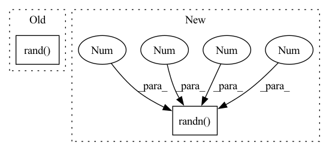

Pattern ID :9983

Before Change
model = models.resnet18(pretrained=False)
input_shape = (1, 3, 224, 224)
torch.onnx.export(model, torch.rand(*input_shape), "./data/" + model_name + ".onnx")
onnx_utils.OnnxSaver.set_node_names("./data/" + model_name + ".onnx", model, input_shape)
onnx_model = onnx.load("./data/" + model_name + ".onnx")
After Change
model_name = "resnet18"
model = models.resnet18(pretrained=False)
dummy_input = torch.randn(1, 3, 224, 224)
torch.onnx.export(model, dummy_input, "./data/" + model_name + ".onnx")
onnx_utils.OnnxSaver.set_node_names("./data/" + model_name + ".onnx", model, dummy_input)
In pattern: SUPERPATTERN
Frequency: 3
Non-data size: 2
Instances
Fragment ID: 35640479
Project Name: quic/aimet
Commit Name: 1f2711424fe06bce693a1b5c904919b00bb394ad
Time: 2021-01-15
Author: quic_klhsieh@quicinc.com
File Name: TrainingExtensions/torch/test/python/test_onnx_utils.py
M Class Name: TestOnnxUtils
N Class Name: TestOnnxUtils
M Method Name: test_add_pytorch_node_names_to_onnx_resnet(1)
N Method Name: test_add_pytorch_node_names_to_onnx_resnet(1)
M Parent Class: unittest.TestCase
N Parent Class: unittest.TestCase
M File Name: TrainingExtensions/torch/test/python/test_onnx_utils.py
N File Name: TrainingExtensions/torch/test/python/test_onnx_utils.py
M Start Line: 90
M End Line: 92
N Start Line: 90
N End Line: 92
'>
Before Change
model = OutOfOrderModel()
input_shape = (1, 16, 20, 20)
torch.onnx.export(model, torch.rand(*input_shape), "./data/" + model_name + ".onnx")
onnx_utils.OnnxSaver.set_node_names("./data/" + model_name + ".onnx", model, input_shape)
onnx_model = onnx.load("./data/" + model_name + ".onnx")
After Change
model_name = "out_of_order"
model = OutOfOrderModel()
dummy_input = torch.randn(1, 16, 20, 20)
torch.onnx.export(model, dummy_input, "./data/" + model_name + ".onnx")
onnx_utils.OnnxSaver.set_node_names("./data/" + model_name + ".onnx", model, dummy_input)
'>
Fragment ID: 35640511
Project Name: quic/aimet
Commit Name: 1f2711424fe06bce693a1b5c904919b00bb394ad
Time: 2021-01-15
Author: quic_klhsieh@quicinc.com
File Name: TrainingExtensions/torch/test/python/test_onnx_utils.py
M Class Name: TestOnnxUtils
N Class Name: TestOnnxUtils
M Method Name: test_add_pytorch_node_names_to_onnx_ooo(1)
N Method Name: test_add_pytorch_node_names_to_onnx_ooo(1)
M Parent Class: unittest.TestCase
N Parent Class: unittest.TestCase
M File Name: TrainingExtensions/torch/test/python/test_onnx_utils.py
N File Name: TrainingExtensions/torch/test/python/test_onnx_utils.py
M Start Line: 111
M End Line: 113
N Start Line: 111
N End Line: 113
'>
Before Change
test onxx based utility to find mapping between onnx node names and io tensors
model = models.resnet18(pretrained=False)
input_shape = (1, 3, 224, 224)
torch.onnx.export(model, torch.rand(*input_shape), "./data/resnet18.onnx")
onnx_utils.OnnxSaver.set_node_names("./data/resnet18.onnx", model, input_shape)
onnx_model = onnx.load("./data/resnet18.onnx")
After Change
def test_onnx_node_name_to_input_output_names_util(self):
test onxx based utility to find mapping between onnx node names and io tensors
model = models.resnet18(pretrained=False)
dummy_input = torch.randn(1, 3, 224, 224)
torch.onnx.export(model, dummy_input, "./data/resnet18.onnx")
onnx_utils.OnnxSaver.set_node_names("./data/resnet18.onnx", model, dummy_input)
onnx_model = onnx.load("./data/resnet18.onnx")
'>
Fragment ID: 35640465
Project Name: quic/aimet
Commit Name: 1f2711424fe06bce693a1b5c904919b00bb394ad
Time: 2021-01-15
Author: quic_klhsieh@quicinc.com
File Name: TrainingExtensions/torch/test/python/test_onnx_utils.py
M Class Name: TestOnnxUtils
N Class Name: TestOnnxUtils
M Method Name: test_onnx_node_name_to_input_output_names_util(1)
N Method Name: test_onnx_node_name_to_input_output_names_util(1)
M Parent Class: unittest.TestCase
N Parent Class: unittest.TestCase
M File Name: TrainingExtensions/torch/test/python/test_onnx_utils.py
N File Name: TrainingExtensions/torch/test/python/test_onnx_utils.py
M Start Line: 129
M End Line: 130
N Start Line: 129
N End Line: 130